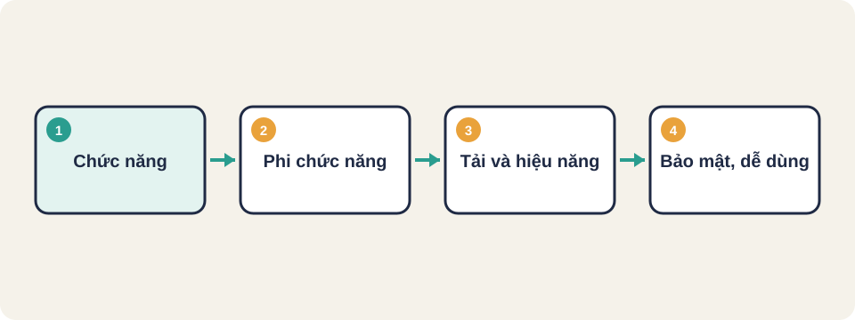
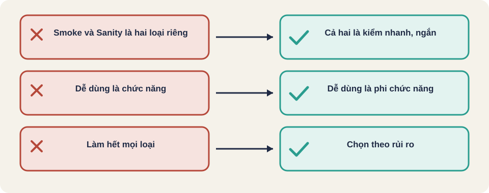

Hình vẽ gốc, dùng để minh họa thứ tự các bước chính của bài.
Nhìn toàn bộ các loại kiểm thử trên một bản đồ: loại nào kiểm chức năng, loại nào kiểm chất lượng, và khi nào dùng loại nào.

Hình vẽ gốc, dùng để minh họa thứ tự các bước chính của bài.
Một đội nhận được yêu cầu: "kiểm thử kỹ trước khi ra mắt". Ai cũng hiểu theo cách khác nhau: người thì kiểm chức năng, người thì kiểm tốc độ, người thì kiểm bảo mật. Bản đồ các loại kiểm thử giúp cả đội nói cùng một ngôn ngữ.
Kiến thức chung, cách phân loại phổ biến. Chưa đối chiếu một nguồn chuẩn.
Mọi loại kiểm thử thường nằm trong hai nhánh:
Kiến thức chung, cách phân loại phổ biến. Chưa đối chiếu một nguồn chuẩn.
| Loại | Tên tiếng Anh | Kiểm gì |
|---|---|---|
| Kiểm thử đơn vị | Unit testing | Một hàm hoặc một module, tách riêng |
| Kiểm thử tích hợp | Integration testing | Các module ghép lại có nói chuyện đúng không |
| Kiểm thử hệ thống | System testing | Toàn bộ ứng dụng theo yêu cầu |
| Kiểm thử giao diện | Interface testing | Điểm nối giữa hai hệ thống hoặc hai thành phần: định dạng, mã lỗi, thời gian chờ |
| Kiểm thử hồi quy | Regression testing | Chức năng cũ vẫn chạy sau khi sửa |
| Kiểm thử chấp nhận | User acceptance testing (UAT) | Người dùng hoặc khách hàng xác nhận đạt nghiệp vụ |
Kiến thức chung, cách phân loại phổ biến. Chưa đối chiếu một nguồn chuẩn.
| Loại | Tên tiếng Anh | Câu hỏi chính |
|---|---|---|
| Kiểm thử tài liệu | Documentation testing | Hướng dẫn có đúng và đủ với phần mềm không? |
| Kiểm thử cài đặt | Installation testing | Cài, gỡ, nâng cấp có chạy trơn tru không? |
| Kiểm thử hiệu năng | Performance testing | Nhanh và ổn định dưới tải ra sao? |
| Kiểm thử độ tin cậy | Reliability testing | Chạy lâu có hỏng không, hồi phục sau sự cố thế nào? |
| Kiểm thử bảo mật | Security testing | Có lỗ hổng để bị xâm nhập hoặc lộ dữ liệu không? |
| Kiểm thử dễ dùng | Usability testing | Người mới có làm được việc chính không? |
Kiến thức chung, cách phân loại phổ biến. Chưa đối chiếu một nguồn chuẩn.
| Kiểu | Tên tiếng Anh | Ví dụ |
|---|---|---|
| Tải bình thường | Load testing | 500 người dùng cùng lúc trong giờ cao điểm |
| Quá tải | Stress testing | Tăng dần đến khi hệ thống gãy, xem nó gãy thế nào |
| Chịu tải lâu | Endurance testing | Chạy 24 giờ với tải vừa, xem bộ nhớ có cạn không |
| Tăng vọt đột ngột | Spike testing | Từ 50 lên 5.000 người trong vài giây, như khi có tin nổi bật |
Kiến thức chung, cách phân loại phổ biến. Chưa đối chiếu một nguồn chuẩn.
Thuật ngữ trong slide này: Load, Stress, Endurance, Spike: Bốn kiểu kiểm tải: tải bình thường (load), quá tải để tìm điểm gãy (stress), chạy lâu để tìm rò rỉ (endurance), tăng vọt trong vài giây (spike).
| Loại | Việc cụ thể trong Thư viện K12 |
|---|---|
| Chức năng: hệ thống | Giáo viên soạn bài, duyệt, học sinh luyện tập từ đầu đến cuối |
| Giao diện | Gửi yêu cầu đăng nhập bằng PIN, kiểm mã lỗi trả về |
| Hồi quy | Sau khi sửa đăng nhập, các bài đã chạy vẫn đúng |
| Bảo mật | Học sinh không đọc được ghi chú giáo viên bằng cách gọi trực tiếp API |
| Tải | Cả lớp 40 học sinh cùng nộp bài trong 1 phút |
| Cài đặt | Triển khai lên máy chủ mới bằng Docker Compose, chạy được ngay |
Các ca trên là ví dụ theo README của Thư viện K12. Chưa chạy kiểm thử thật để xác nhận từng ca.
Smoke testing: kiểm nhanh xem bản build có chạy được các chức năng chính không, làm ngay sau khi build. Sanity testing: kiểm hẹp sau một thay đổi nhỏ, xem sửa có làm đúng không. Cả hai đều ngắn và nhanh, thường nằm trong nhóm kiểm thử hồi quy.
Kiến thức chung, cách phân loại phổ biến. Chưa đối chiếu một nguồn chuẩn.
Thuật ngữ trong slide này: Smoke testing: Kiểm nhanh các chức năng cốt lõi sau khi build, để biết bản có đáng kiểm tiếp không. · Sanity testing: Kiểm hẹp sau một thay đổi nhỏ, để xác nhận đúng chỗ vừa sửa đã hoạt động.
Đội phát hành một tính năng thanh toán mới. Hãy chọn ba loại cần làm trước, và giải thích vì sao không chọn loại còn lại trong tuần này.
Với mỗi việc sau, cho biết thuộc chức năng hay phi chức năng: (1) kiểm nút Đăng ký hoạt động; (2) kiểm trang chủ tải dưới 2 giây; (3) kiểm hướng dẫn cài đặt có đúng bước.

Smoke testing
Sanity testing
Load, Stress, Endurance, Spike